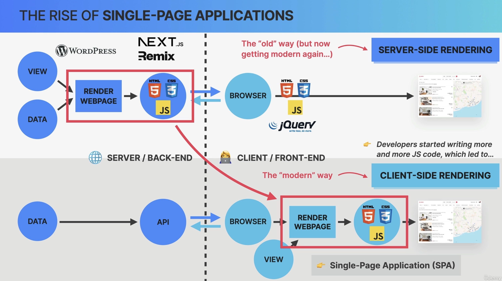

Why Do Front-End Frameworks Exist?
https://www.udemy.com/course/the-ultimate-react-course/learn/lecture/37350390#overview
Before 2010: server-side rendering
All rendering was done on server upon client request
Result (HTML, CSS, JS) is then sent to client as response
Example: WordPress
JavaScript was only used for simple effects (e.g. animations)
jQuery was used heavily to ensure all browser behaved the same way
After 2010: client-side rendering
More and more JS code was written for the client
Ultimately resulting in single page web applications (SPA, client-side rendering)
Data comes from API calls towards the server
No entire page reloads (feels like a desktop application)
Server-side rendering currently gradually returns via frameworks built on top of client-side rendering frameworks (e.g. NextJS, Remix)


Front-end web applications are all about handling & displaying in a user interface, hence the most important task is the user interface to stay in sync with the data.
Hint
A piece of data represents a piece of state.
Single-Page Applications with plain JavaScript
requires lots of DOM manipulation and traversing -> complex code
stores data (state) inside the DOM, shared across entire app -> hard to debug
Front-End Frameworks are needed because they
keep a UI in sync with data is really hard and requires lots of work -> Frameworks take care of that, so developers can focus on the app itself
enforce a “correct” way to structuring and writing code (prevent spaghetti-code)
give a consistent way to build web applications